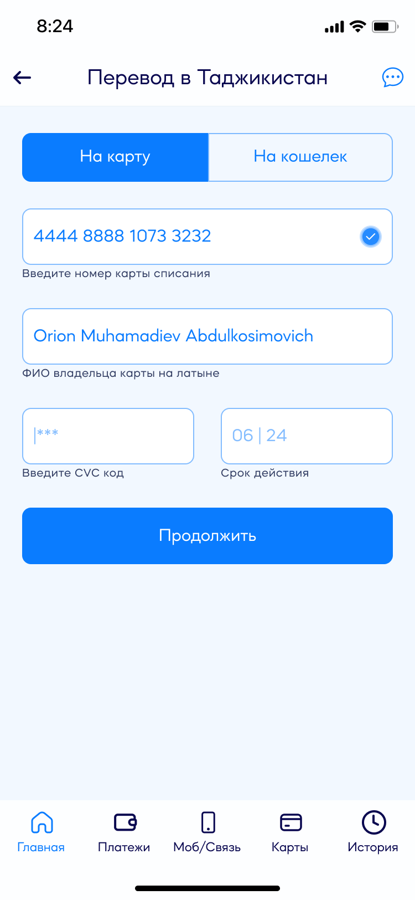
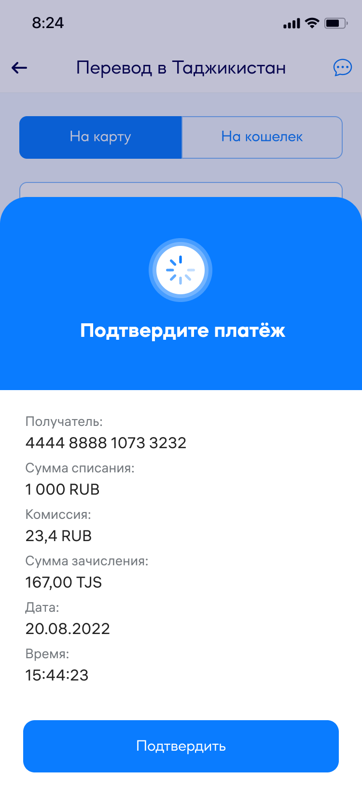
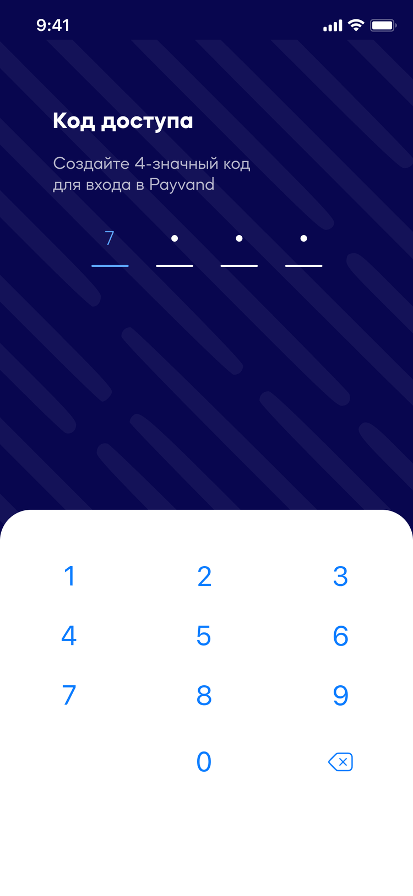
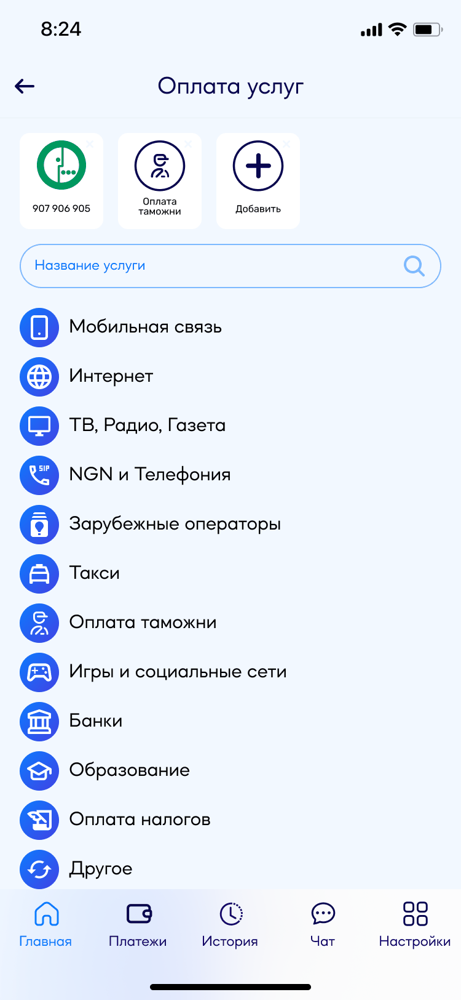

Key screens and the reasoning behind each.
01 · Six steps — parity, not victory
Payvand TransferCorridor, recipient and amount, the card being charged, confirmation, the SMS code, done. Six steps, and registration is never asked for on the critical path. To be straight about it: this does not beat Favri Intiqol — it draws level with it. That was the point. On a flow this short there is nothing to win on cleverness; you either clear the same bar or you lose the person at step three. Being worse was the only outcome we could not afford.
↳ The recipient field validates as you type — «Клиент найден!» appears before you commit to anything, so a wrong digit costs a second, not a transfer.


02 · The rate is on the screen before you type the amount
Payvand TransferUnder the amount field sits one line: «Комиссия до 99999 — 1,5%. Текущий курс 1 000 руб = 167,00 сомони». It is there before the first keystroke. A person sending money home is doing arithmetic — how much leaves, how much lands — and every app that hides the rate until the last screen makes them do that arithmetic twice. The catalogue of corridors does the same thing one level up: «Без комиссии» next to Payvand-to-Payvand, «Комиссия 1%» next to the paid ones. Price is a navigation label here, not fine print.
03 · Registration is a door further in, not a gate at the entrance
Payvand TransferThe app opens on a guest home screen: four corridors, ready to use. The invitation to register sits underneath them — «Зарегистрируйтесь для полного доступа ко всем функциям» — where it reads as an offer rather than a toll. Someone who signs up gets a saved profile, history and a 4-digit access code; someone who does not still gets their money home tonight. This is the one place where we could have copied the competitor and instead went one step further: Favri Intiqol removed the account from the flow, and we made removing it visible on the first screen.

04 · QR is the first icon, not a menu item
Payvand WalletNFC acceptance in Tajikistan was barely deployed, but merchants already had static QR codes taped to the counter. So QR went first in the services row on the home screen — ahead of mobile top-up, utilities and everything else — because a habit that does not exist yet has to be visible before it can form. The model works with what was already there: the merchant has a fixed code, the customer enters the amount themselves, confirms, done. No terminal required on either side.

05 · A refusal is a screen too
Payvand WalletTwo of the transfer outcomes are failures, and both were drawn rather than left to a toast message. «Недостаточно средств на счету» and «У этого контакта нет кошелька Payvand» get the same sheet, the same weight and the same single way out as the success state. The second one matters more than it looks: it is not an error the sender made, it is a fact about someone else, and saying so plainly is the difference between «the app is broken» and «try the card instead».


06 · Four runs at the same sign-in
Payvand WalletThe file keeps four complete versions of the entry flow — start, sign-up, sign-in, verification — side by side. That is not indecision; a wallet lives or dies on the screen before anyone has seen anything of value, and it was worth redrawing four times. What survived: a phone number and nothing else on the first screen, the code auto-advancing across four cells, «Неверный номер?» as an escape hatch instead of a back button, and a 4-digit code you set yourself so the second session is one gesture.


07 · The components, briefly
Both appsBoth apps run on one shared library — card variants, button hierarchy, an icon set per payment category, colour tokens, and type sized for three languages of very different lengths. It lives in a separate file from the screens shown here, so I will not pretend to walk you through it. The point it earned: Transfer was drawn out of components that already existed, so the second app cost a fraction of the first and there was nothing to reconcile afterwards.